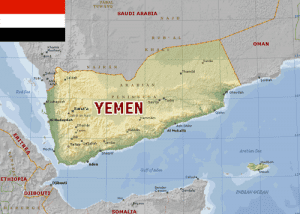

Quintus can be found at qcurtius.com. He is the author of the books On Duties, Thirty Seven, Sallust: The Conspiracy Of Catiline And The War Of Jugurtha, and other books. His work has been reviewed at Taki's Magazine. He can be followed on Twitter


President Obama’s stated public aspirations all seem to follow a predictable pattern. First he makes grandoise statements of principle, and asks that we hold ourselves to these high standards. Then a test to apply these principles will come along, in the form of a legislative or political event. At that point, difficulties will arise. And then the President will gradually retreat from his position, until almost nothing left of it remains. Weary and disheartened, he then abandons the field, wringing his hands about the failure of the system to live up to his high ideals. This pantomime has been played out a number of times during his presidency.

Consider the current war in Yemen, for example. Most in the West know very little about this conflict. Saudi Arabia is currently using air and ground forces to try to dislodge the Houthi rebels who control various parts of Yemen. In Riyadh’s paranoid world, every Shia sect (the Houthis are Shias) is an Iranian proxy, out to subvert and destroy the Wahabi kingdom of Ibn Saud. This is the obsession that keeps them awake at night, and the one that has caused them to pour billions into supporting terrorist “rebels” in Syria in an effort to install a religiously correct leader in Damascus. It would be sad, if the results were not so murderous.
Not satisfied with causing death and carnage in Syria, Riyadh has been begging the United States for more and more weapons. And the United States has been obliging. Once the Houthis forced out the Saudi-backed Yemeni president Abd Rabbou Mansour from power in 2015, the Saudis intervened militarily. But we should call it what is really is: an invasion of a neighbor, the type of thing that the West went into paroxysms of righteous moral outrage over in 1990 when Saddam invaded Kuwait.

Once the Saudis were in with both feet, Washington concluded a “support package” whereby the US would share intelligence and supplies to help the Saudis with their war. Since then, the US has given them more than 40 million pounds of jet fuel, as well as intelligence and weapons systems. The Obama administration has already approved over $100 billion in arms sales to the Saudis. A new “aid package” was recently debated in Congress that would provide about 150 Abrams tanks and another $1.15 billion in weapons.
And what would all these weapons and ordnance be used for? Why, to bomb and invade some Yemeni tribesmen who have never done anything to anyone, of course. It all makes perfect sense. Never mind that Egypt in the 1950s and 1960s poured tens of thousands of men into Yemen in an attempt to make it a satellite state, only to see all its hopes come to nothing. Never mind that Saudi Arabia lacks the military capability to do anything more than fire rifles at stationary targets; this is all about placating a nest of snakes in Riyadh, for fear that saying no to them may cause them to get angry. (And I’m sure that the President’s recent vetoing of the bill that would allow victims of 9/11 to sue Saudi Arabia had nothing to do with politics.)
Meanwhile the US public knows almost nothing about these events. How likely that this video will be shared on the American mainstream media’s nightly news outlets? In it, a Yemeni girl reminds us of the Saudi terror currently underway there.
There have been some dissenting voices. Kentucky Senator Rand Paul and Connecticut’s Chris Murphy have roundly criticized more military aid to Saudi Arabia, questioning the wisdom of getting involved in yet another regional war. Nevertheless, it is likely that the chief executive and the arms industry will continue to have their way, despite the cost to US credibility and the human toll on the ground in Yemen. It came as no surprise that ultra-hawk John McCain–who never met an imperialist war he didn’t like—would say this about the Saudi arms deal:
Blocking this sale of tanks will be interpreted by our Gulf partners, not just Saudi Arabia, as another sign that the United States of America is abandoning our commitment in the region and is an unreliable security partner. That’s what this vote is all about.
It’s not like the President doesn’t know what’s going on. He does. As he enunciated what Jeffrey Goldberg called the “Obama Doctrine,” the President pointed out how senseless it was for the United States to allow itself to be pulled into Mideast wars. His essential point was that the sects and nations of the region have to learn to live together, and that constant outside interference does not advance this purpose. In his recent address to the UN, the President voiced these lofty ideals:
Sometimes we take one step forward and then two steps back. In countries held together by borders drawn by colonial powers, with ethnic enclaves and tribal divisions, politics and elections can sometimes appear to be a zero-sum game. And so, given the difficulty in forging true democracy in the face of these pressures, it’s no surprise that some argue the future favors the strongman, a top-down model, rather than strong, democratic institutions.
But high ideals are one thing; implementation is another. In practice, the US has done just about everything it could to undermine “democratic institutions” in the Middle East. In the real world, the US funds Sunni terrorist lunatics to fight in Syria, so that they topple one of the few remaining secular states in the region. But of course, all of this passes without comment by the mainstream press.
In practice, the President seems unable to exert the kind of moral courage that would allow him to stand up to regional players like Saudi Arabia and tell them no. Instead, he retreats into hand-wringing and complaining, while the money and weapons continue to flow. The act grows tiresome, after a while.

And where has the US’s Secretary of State been, all this time? She likes to style herself a foreign affairs expert, but a look at the record shows one foreign policy disaster after another on her watch. She presided over the destruction of Libya; the ruin of Syria; the inundation of Europe with refugees; and now a vicious, immoral war in Yemen. This writer can’t even recall he heard the word “Yemen” come out of Mrs. Clinton’s lips, as the press has never dared to bring up the issue.
One hopes that the Yemen question will come up at least once during the presidential debates. And at that time, the Secretary of State can explain to the world exactly what her position and policy is on the matter.
Read More: 5 Questions To Identify Who Really Rules Over You